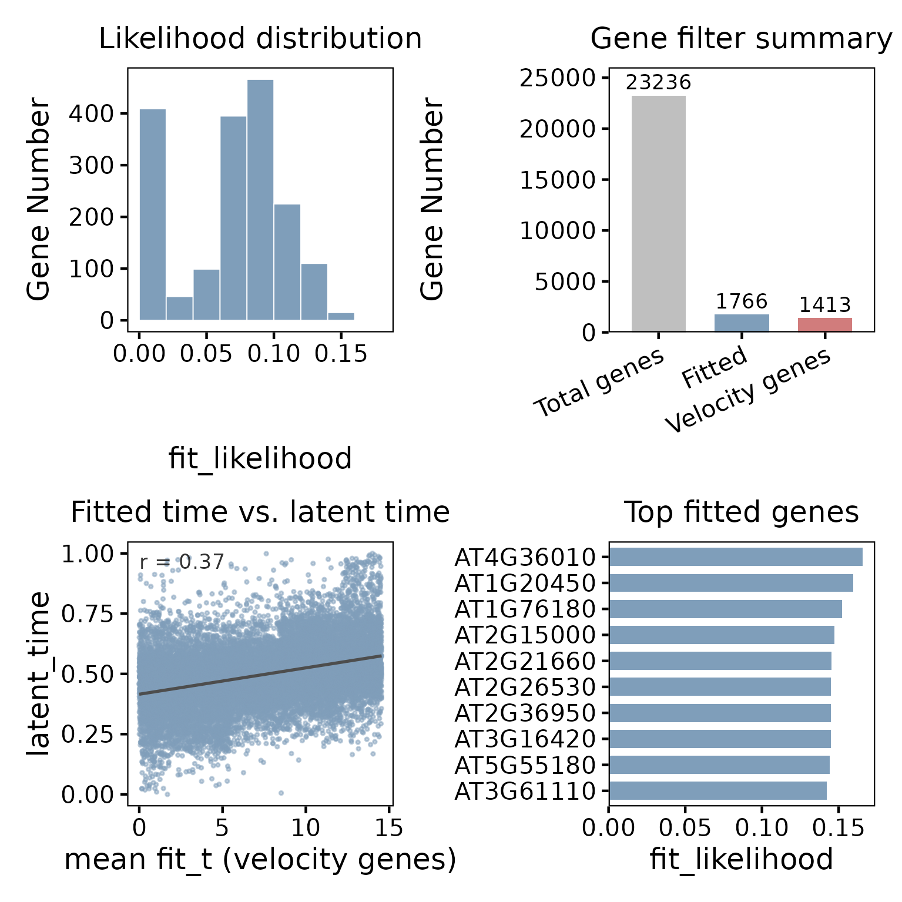
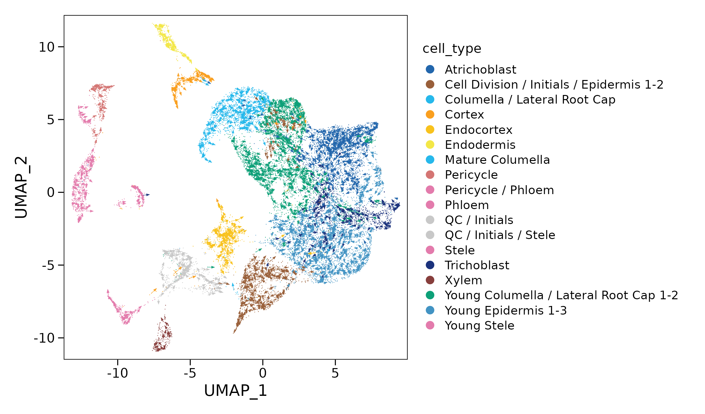
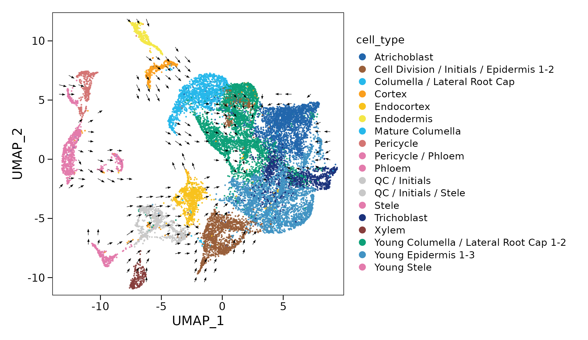
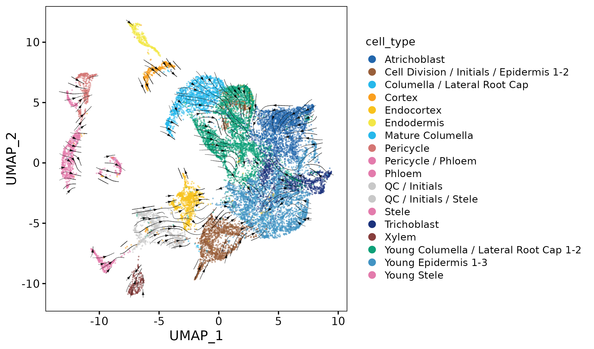
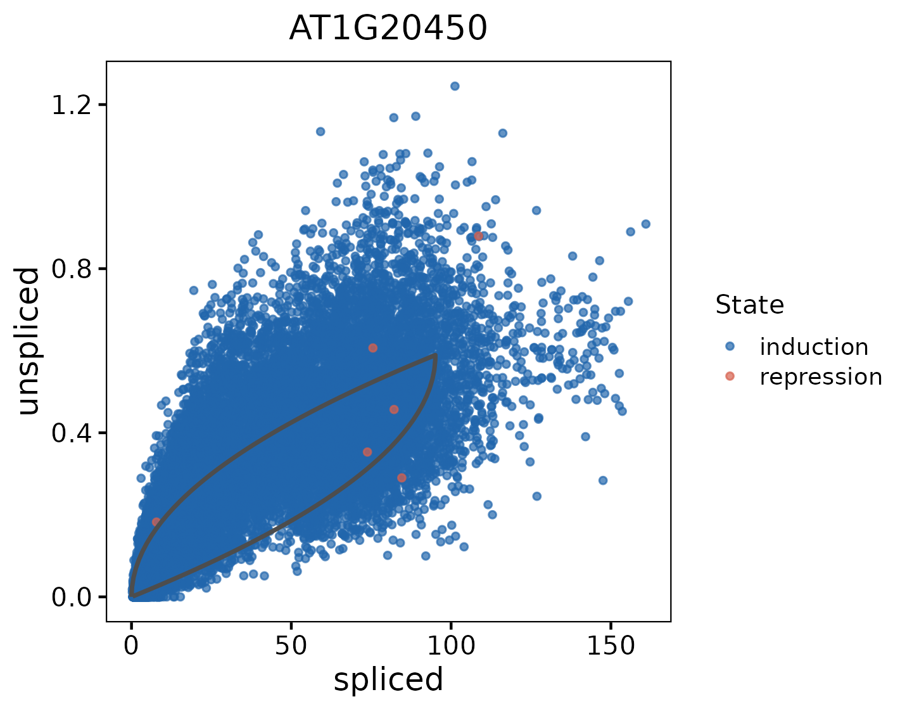
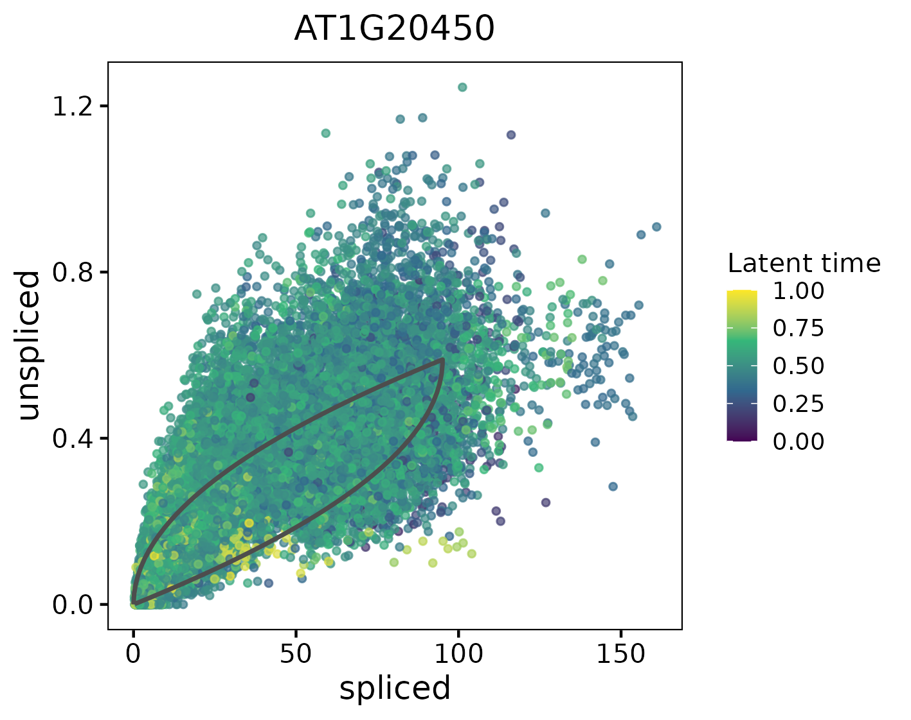
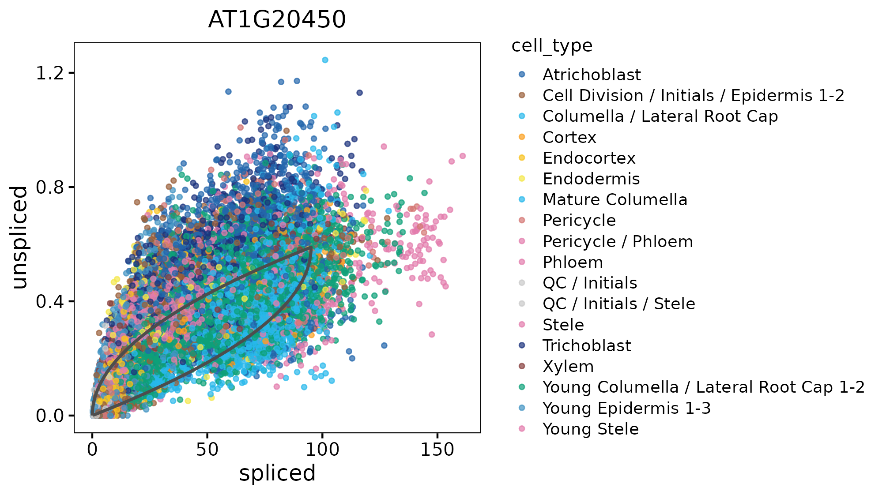

RNA Velocity Analysis
Infer RNA velocity from the aligned spliced and unspliced count layers in a plantvelo object. This workflow constructs a neighbourhood graph, computes expression moments, fits gene-wise dynamics and builds a directed velocity graph. Inspect the fitted model with diagnostics, velocity-field plots and gene phase portraits.
Before you begin¶
Start with the pv object created in Data Preparation. It should contain spliced and unspliced count layers and a PCA reduction inherited from Seurat.
For IR-aware analysis, prior-based count correction should already have been performed upstream. IR-associated counts, when available, remain separate from the two-state velocity model.
Build the neighbour graph¶
Construct a nearest-neighbour graph using the PCA representation:
pv <- build_neighbor_graph(pv, n_neighbors = 30, n_pcs = 30)n_neighborscontrols the number of nearest neighbours used to construct the graph.n_pcscontrols the number of available principal components used to calculate cell distances.
The graph describes local relationships between cells and provides the neighbourhood information used for expression smoothing.
Compute expression moments¶
Smooth the count layers across neighbouring cells:
pv <- compute_moments(pv)This step produces:
Ms— smoothed spliced counts.Mu— smoothed unspliced counts.Mr— smoothed IR-associated counts, when theirlayer is available.
Ms and Mu are used for kinetic fitting. Mr is retained for independent intron-retention analysis and does not contribute to velocity inference.
Recover gene-wise dynamics¶
Fit the two-state kinetic model independently for selected genes:
pv <- recover_dynamics(pv, n_top_genes = 2000)The model estimates transcription, splicing and degradation parameters from the spliced and unspliced expression moments.
When genes is not specified, the current implementation selects up to n_top_genes genes ranked by mean spliced expression. With the default smoothed workflow, this ranking uses Ms.
To fit a specific set of genes, provide their identifiers:
pv <- recover_dynamics(pv, genes = genes_to_fit)Here, genes_to_fit is a character vector whose identifiers match the feature names used to construct pv: Gene_ID when imported with loom_gene_attr = "Accession", or Gene_symbol when imported with loom_gene_attr = "Gene".
Fitting results are stored in pv@kinetics$params. Inspect the fitted parameters and status counts:
head(pv@kinetics$params)
table(pv@kinetics$params$fit_model)The fit_model column records "fitted" or "unfitted". Genes that were not selected or could not be fitted remain marked as "unfitted".
Compute RNA velocity¶
Calculate RNA velocity from the fitted dynamics:
pv <- compute_velocity(pv, mode = "dynamical")This step produces spliced velocity in pv@layers$velocity and unspliced velocity in pv@layers$velocity_u.
Genes passing the fitted-likelihood threshold and internal scaling filters are marked in pv@velocity$genes. The default min_likelihood is 0.001.
Inspect the number of selected velocity genes:
sum(pv@velocity$genes, na.rm = TRUE)Build the velocity graph¶
Compare each cell’s velocity vector with expression differences to neighbouring cells:
pv <- compute_velocity_graph(pv)By default, graph construction uses the selected velocity genes and smoothed spliced expression (Ms). It considers both first- and second-order neighbours.
Positive and negative directional similarities are stored separately in pv@graphs$velocity_graph and pv@graphs$velocity_graph_neg. These graphs support downstream velocity projection and transition analysis.
Fit diagnostics¶
Inspect the fitted dynamics and the genes retained for velocity analysis:
plot_diagnostics(pv)
- Likelihood distribution summarizes fitted gene likelihoods.
- Gene filter summary compares total, fitted and selected velocity gene counts.
- Fitted time vs. latent time compares each cell’s mean fitted time across velocity genes with its latent time.
- Top fitted genes shows the genes with the highest fitted likelihoods.
Visualize the velocity field¶
Project velocity onto the UMAP embedding:
pv <- compute_velocity_embedding(pv, reduction = "umap")The supplied example figures retain their original colours; results drawn with the code below use the package defaults.
Cell-level arrows
Display projected velocity vectors at individual cell positions. Set group_by to a metadata column in your object; the examples use cell_type and the default plotting colours.
plot_velocity_embedding(pv, reduction = "umap", group_by = "cell_type")
density controls the fraction of valid, non-zero cell vectors displayed as arrows. Its default value of 0.1 displays approximately 10% of these vectors.
Grid arrows
Summarize local velocity directions with arrows on a regular grid:
plot_velocity_embedding_grid(pv, reduction = "umap", group_by = "cell_type")
n_gridsets the number of grid positions along each axis.smoothcontrols the interpolation bandwidth.min_masscontrols the velocity-strength mask.cutoff_perccontrols the local-length mask.
Stream plot
plot_velocity_stream(pv, reduction = "umap", group_by = "cell_type")
min_masscontrols the velocity-strength mask.point_sizeadjusts the background cell points.arrow_sizecontrols arrowhead size.stream_linewidthsets the upper bound of the stream-line width range.raster_points = FALSEkeeps cell points as vector elements in the plot.
Streamlines summarize the interpolated velocity field and are not tracked trajectories of individual cells.
Gene phase portraits¶
Inspect the relationship between spliced and unspliced expression for an individual gene and overlay its fitted kinetic curve. The examples use AT1G20450, which must be present in the object and have fitted dynamics.
Use a Gene_ID when the object was created with loom_gene_attr = "Accession", or the matching Gene_symbol when it was created with loom_gene_attr = "Gene". By default, phase portraits use the smoothed expression moments Ms and Mu.
Colour by kinetic state
plot_phase_portrait(pv, gene = "AT1G20450", group_by = "state", show_fit = TRUE)state distinguishes the gene’s fitted induction and repression states. show_fit = TRUE overlays the fitted kinetic curve.

Colour by latent time
plot_phase_portrait(pv, gene = "AT1G20450", group_by = "latent_time", show_fit = TRUE)Colour cells by the latent time computed earlier to compare their temporal ordering with the gene’s expression dynamics.

Colour by cell type
plot_phase_portrait(pv, gene = "AT1G20450", group_by = "cell_type", show_fit = TRUE)Colour cells by their metadata annotation to relate the gene’s expression pattern to the populations shown in the velocity field.

Continue to latent time and terminal states¶
Continue with Latent Time & Terminal States to learn how temporal ordering and root-cell and end-point scores are inferred.